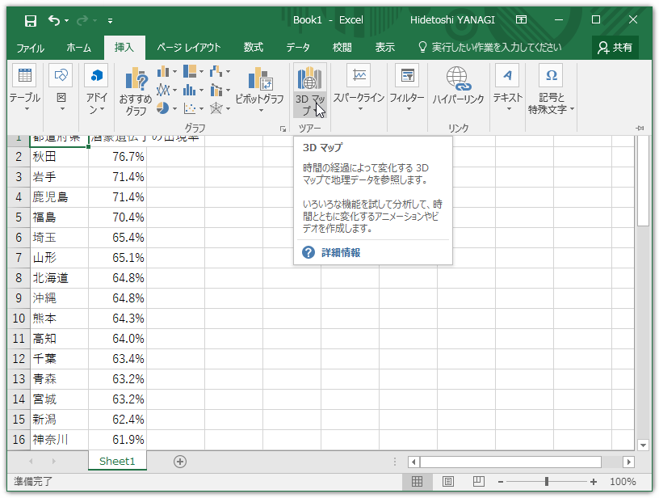
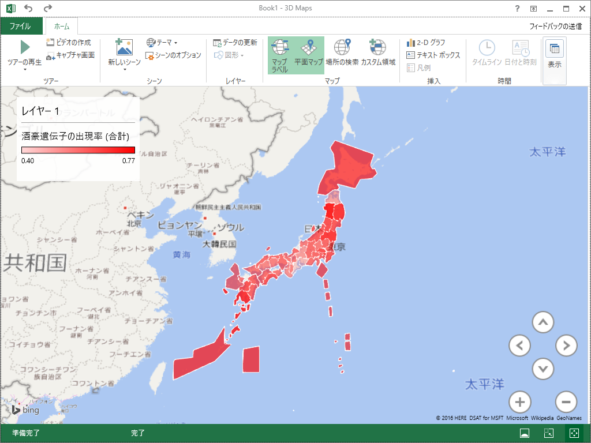

「三重県民には無理に飲ませてはいけない」をグラフ化する
公開日：
三重県民には無理に飲ませないように。 pic.twitter.com/M1GUINZlfB
— 木ゃなこ (@tierra534) 2017年1月1日
Excel の 3D Maps を利用する
詳しい方法は「Excel 2016の新機能「3Dマップ」の使い方。地図上にグラフを作成できる！ | できるネット」で紹介されている。

まずテーブルを作成。

次に［挿入］－［3D マップ］コマンドを選択。

「データ解析アドイン」を有効化するかどうか聞かれるので、［有効］ボタンを押す。

すると 3D Maps の編集画面が現れるので、ごにょごにょイジっていい感じにする。なんか塗りが適当だし、石川県・香川県・福岡県がなぜか欠落しているけど気にしない（詳しい人、直し方教えて）。
Google Chart を利用する
JavaScript が書けるならこっちの方が簡単。
<script src="https://www.google.com/jsapi"></script> <script> google.load('visualization', '1', {packages:['geochart']}); google.setOnLoadCallback(graphChart);function graphChart() { var data = google.visualization.arrayToDataTable([ ["都道府県", "データ"], ["秋田", 76.7] , ： ： ["三重", 39.7] ]); var option = { region: 'JP', resolution: 'provinces' };
var chart = new google.visualization .GeoChart(document.getElementById('chart')); chart.draw(data, option); } </script>
<div id="chart"></div>
コードを貼り付けると、以下のようにレンダリングされる。
ちなみに、下記の記事を参照しました。都道府県名に“県”とかつけちゃうとダメみたい。
雑感
東海地方はお酒が弱い人が多いみたい。なんとなくだけど記紀によく登場する地域（紀・畿内・吉備・越＋東海）はお酒に弱い感じがあるので、縄文系はお酒に強く、弥生系はお酒に弱いみたいな違いとかあるのかな。